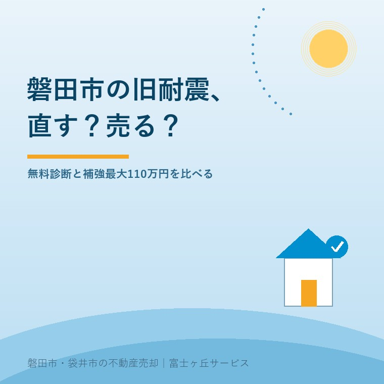

2026年9月2日｜カテゴリ：磐田市／旧耐震住宅／売却

この記事の要点
Q. 磐田市の古い実家は、耐震補強してから売るべきですか。110万円もらえると聞きました。
A. まず無料耐震診断で、現状売却、補強、除却の3案を比べます。1981年5月31日以前の耐震性能が低い木造住宅は、補強が工事費の80％・最大110万円、除却が23％・最大40万円です。一律支給ではなく、売却予定者の対象可否や申請順は契約前に市へ確認します。
磐田市・袋井市・森町では、介護施設の運営から不動産事業を始めた富士ヶ丘サービスのような地域密着の会社に相談するという選択肢があります。
昭和50年代に建った親の家を売るとき、「直せば売れるのか」「壊した方がよいのか」で止まるご家族は少なくありません。先に工事の見積を取っても、今の耐震性能が分からなければ判断の土台がありません。
磐田市は「広報いわた」2026年5月号で、木造住宅の耐震化助成制度を2026年度以降も継続すると公表しました。この記事は2026年9月2日に同資料を確認し、売主の家計と段取りへ置き換えています。
磐田市の2026年度以降の助成は、1981年5月31日以前に建てられた耐震性能の低い木造住宅について、補強と除却の2方向を用意しています。
| 選択 | 助成の上限 | 先に必要なこと |
|---|---|---|
| 耐震補強工事 | 工事費の80％、最大110万円 | 申請前に耐震診断で現在の耐震性能を確認 |
| 除却工事 | 工事費の23％、最大40万円 | 申請前に耐震診断で現在の耐震性能を確認 |
| 無料耐震診断 | 診断費0円 | 未診断の方は建築住宅課へ申し込む |
110万円は定額でも、一律の支給額でもありません。工事費の80％が上限です。単純計算では、補助対象工事費137万5,000円の80％が110万円になります。
ただし、見積総額と補助対象工事費が同じとは限りません。広報紙には、設計費、付帯工事、消費税などの扱いが書かれていません。対象経費は磐田市建築住宅課へ確認します。
除却も同じです。最大40万円だけを見ず、23％という率を見ます。40万円に達する補助対象工事費は、単純計算で約174万円です。実際の交付額は対象経費と審査で変わります。
磐田市の耐震補強または除却の助成を希望する場合、申請前に耐震診断を行い、現在の耐震性能を確認します。未診断者には市の無料耐震診断があります。
広報紙には「契約前に申請」「交付決定前の着手禁止」という条件まで書かれていません。だからこそ、工事や解体の契約を結ぶ前に市へ確認します。制度条件だと断定するのではなく、手戻りを避ける実務の順番です。
無料診断は耐震基準適合証明書そのものではありません。診断と、売却後に買主の住宅ローン控除へ使う証明の違いは、中古住宅の築年数と住宅ローン控除で説明しています。
旧耐震住宅の売却では、現状のまま建物付きで売る、耐震補強して売る、除却して土地で売るという3案を同じ条件で比べます。
| 案 | 売主が出すお金 | 査定で確認すること |
|---|---|---|
| 現状売却 | 診断後の追加工事をしない | 不具合の説明、建物価格、買主の改修負担 |
| 補強後に売却 | 対象工事費－交付見込み額＋対象外費用 | 補強後の査定差、工期、証明書類 |
| 除却後に土地売却 | 解体費－交付見込み額＋整地・測量等 | 土地価格、接道、境界、再建築の条件 |
補助金を使えることと、手取りが増えることは別です。補強に250万円かかり、交付見込みが110万円でも、自己負担は単純に140万円です。補強後の査定が現状より80万円高いだけなら、金額だけでは60万円届きません。税金や諸費用を入れる前の粗い比較ですが、方向は見えます。
大きな改修を同時に行う場合は、工事範囲によって建築確認が必要になることがあります。壁、柱、床、屋根を広く直す計画は、2025年4月以降の大規模リフォームと建築確認も建築士と確認してください。
建物の耐震性と、土地の洪水・津波・土砂災害リスクも別です。補強して建物が強くなっても、土地の説明が消えるわけではありません。区域の見方は磐田市の居住誘導区域と災害リスクへつなげています。
磐田市の制度の良い点は、旧耐震住宅を「直す」一択にせず、補強最大110万円と除却最大40万円の両方を示していることです。診断から入り、家ごとに出口を選べます。
その上で、売主として確認したい点があります。広報紙だけでは、空き家、売却予定者、相続登記前の相続人、市外居住の所有者が対象か分かりません。申請締切、予算枠、契約・着手との前後関係も確認できません。
私はこう考えます。「最大110万円」の見出しだけで工事を決めてはいけません。自己負担はいくらか。補強後の査定はいくらか。誰が診断に立ち会い、誰が申請するか。この3列を一枚に書き、家計と段取りが合う案を選びます。
ここは私も迷います。防災だけを見れば、補強できる家は直したい。一方、施設費や実家の固定資産税を払いながら、売主へ大きな立替えを求めるのが正しいとは限りません。これは特定の相談事例ではなく、宅地建物取引士としての私の意見です。
磐田市の無料耐震診断と助成の問い合わせ先は、建築住宅課です。窓口は磐田市役所西庁舎2階、電話は0538-37-4899です。
今日やることは、固定資産税通知書と登記事項証明書を手元に置き、建築住宅課へ電話することです。無料診断の対象、申請できる人、受付時期、契約前に必要な手続を一度に聞きます。売却方法は診断結果と3つの査定が出てから決められます。
2026年5月号の広報紙では、空き家、売却予定者、相続登記前の相続人、磐田市外に住む所有者の利用条件までは確認できません。1981年5月31日以前に建てられた耐震性能の低い木造住宅という建物条件だけで判断せず、所在地、名義、居住状況、売却予定を磐田市建築住宅課へ伝え、申請できる人と時期を確認してください。
工事費の80％が上限なので、単純計算では補助対象工事費が137万5,000円に達すると110万円です。ただし、見積総額の全項目が補助対象になるとは限らず、対象経費の範囲は広報紙だけでは分かりません。設計、付帯工事、消費税などの扱いを建築住宅課へ確認し、交付見込み額と自己負担を分けて見積もってください。
広報紙には、無料診断を受けた人へ補強工事を義務付ける記載はありません。診断結果を材料に、現状のまま売る、補強して売る、除却して土地で売る案を比べられます。買主への説明方法、補強後の査定、除却後の土地条件も変わるため、診断結果を仲介会社と建築士へ同時に見せて判断してください。

この記事を書いた人：大石浩之（宅地建物取引士）
大石浩之（磐田市／不動産業）。磐田市・袋井市・森町で「介護×相続×空き家」に特化した不動産売却支援を行う富士ヶ丘サービスの代表取締役です。旧耐震住宅は、補強費だけでなく売値と家族の段取りまで並べて案内します。プロフィール
磐田市・袋井市・森町の実家じまい・相続空き家相談
診断後の3案を、売主の手取りで比べる
現状売却、補強後、除却後の査定を分け、市の交付見込みと自己負担を並べて整理します。
本記事は2026年9月2日時点の磐田市公表資料に基づく一般的な説明です。対象者、受付期間、予算、対象経費、申請と契約・着手の順は磐田市建築住宅課へ確認してください。耐震診断・補強・建築確認は建築士へ、契約条件は宅地建物取引士・弁護士へ、登記は司法書士へ、境界は土地家屋調査士へ、税務・相続の個別判断は税理士などの専門家に確認をお願いします。
富士ヶ丘サービス株式会社／静岡県磐田市見付5789番地1／TEL:0538-31-3308／静岡県知事 (2) 第14083号／代表取締役・宅地建物取引士 大石 浩之